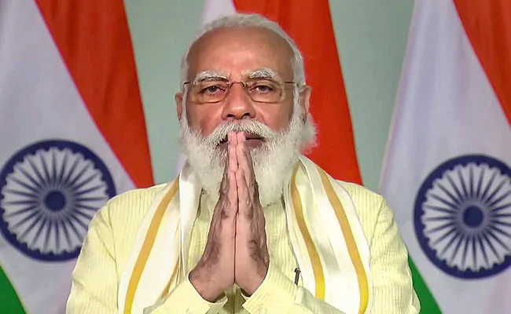
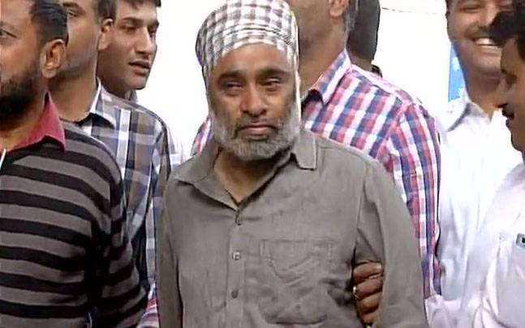

Major blunder in NEET 2020 exam results revealed, All India topper declared as failed In a surprising development, the National Testing Agency (NTA) recently declared a topper as failed in NEET 2020 result. The student named Mridul Rawat, who failed the NEET 2020 as per the first marksheet issued by NTA, actually emerged as an All India Topper in the ST category. Mridul then challenged the result declared by the NTA and after rechecking of the OMR sheet and Answer Key, it was found that he is an All India Topper in ST category. The 17-year-old Rawat is a resident of Gangapur town of Sawai Madhopur district in Rajasthan. On October 16, when the NTA had declared the result, it gave Mridul 329 points in 720. But after rechecking it was found that Mridul has obtained 650 out of 720 marks. |
|  |
PM Narendra Modi To Address Nation At 6 pm New Delhi: Prime Minister Narendra Modi has tweeted that he will address the nation at 6 pm today. "Will be sharing a message with my fellow citizens at 6 pm this evening," PM Modi wrote in his tweet, urging citizens to tune in. The Prime Minister did not specify but many speculated he would speak on the coronavirus situation in the country on the verge of a series of festivals and the approaching winter. This will be his seventh address to the nation since he announced a strict lockdown in March-end to check the spread of the coronavirus. Since June, the nation has been exiting the restrictions in phases in order to reopen the economy. Experts have raised concerns that alongside the unlock rules, the festival season may lead to a surge in infections. India's COVID-19 tally is close to 76 lakhs but for the first time in nearly three months, the country has recorded less than 50,000 new cases in a day. The health ministry reported 46,790 fresh cases in the last 24 hours, which takes the overall cases to 75,97,063. |
 |
7th Pay Commission: Central government employees likely to get DA hike NEW DELHI: In a move that may lead to a hike in salaries of central government employees before Diwali, the Union government is planning to change the base year for the consumer price index for industrial workers (CPI-IW). If everything goes well, the government will make its base year 2016, thus paving the way for a possible hike in Dearness Allowance (DA) of central government employees. The decision will benefit at least 48 lakh central government employees. It is also being said that the central government can release details of the change in the base year of the Consumer Price Index (CPI-IW) on October 21. Although, the government has postponed the increase in the Dearness Allowance of central employees due to coronavirus infection. At present, the central employees are entitled to the Dearness Allowance at the rate of 17 per cent. |
|  |
Nabha Jail Break Story Investigations into the Nabha jailbreak case have revealed startling information. As per the sources, the investigation has revealed that Khalistan Liberation Force chief Harminder Singh Mintoo had made calls to Pakistan while he was lodged in the Nabha jail. Investigations into the Nabha jailbreak case have revealed startling information. As per the sources, the investigation has revealed that Khalistan Liberation Force chief Harminder Singh Mintoo had made calls to Pakistan while he was lodged in the Nabha jail. The investigating agencies are now going through his call details to ascertain where exactly he made those calls. It is being suspected that he made those calls to Khalistan movement sympathiser and even some ISI operatives in Pakistan, sources said. |
 |
Note Ban: Dance Bars in Maharashtra unaffected run on parallel currency With Prime Minister Narendra Modi's crackdown on black, commercial establishments have stopped accepting Rs 500 and Rs 1,000 currency notes. However, there are few places that continue to accept the demonetised notes without any hesitation Dance bars that are operating illegally in Mumbai and across Maharashtra have emerged unaffected by the cash crunch. These are the places where black money is dumped by several people including businessmen, gangsters and politicians who frequent them. While Rs 500 and Rs 1,000 have been replaced by the new Rs 500 and Rs 2,000 currency notes, dance bars across Mumbai and Maharashtra have created a parallel currency for themselves. These fake notes are available at all dance bars and are being used to shower on the performers in these bars. The notes generated and developed here even have Mahatma Gandhi's photo printed on it. |
Bengaluru: Driver who fled with 1.37 crore arrested Dominic Roy, the driver who fled with Rs 1.37 crore of ATM cash last week, was arrested from KR Puram in Bengaluru today. His wife Elvin was arrested on Monday. In a daring daylight heist on November 23, Roy, 45, who was hired by outsourcing agency Logi-Cash, drove away with the cash when two other employees had gone to a bank in the heart of the city to collect money. Next day, the abandoned white-and-yellow cash van was found at Vasant Nagar and Rs 45 lakh of Rs 1.37 crore recovered from it. Of the Rs 45 lakh recovered from the van, Rs 10 lakh were in Rs 100 denomination and the remaining (Rs 35 lakh) in the new Rs 2,000 denomination. Police were also investigating why Dominic left behind Rs 45 lakh in the pick-up van before fleeing with the remaining Rs 92 lakh in Rs 100 and Rs 2,000 denominations.Dominic's wife, who had come to Bengaluru from Dubai a fortnight ago with their son, had left their house in the city's northeast suburb after police quizzed her last week on his whereabouts. |